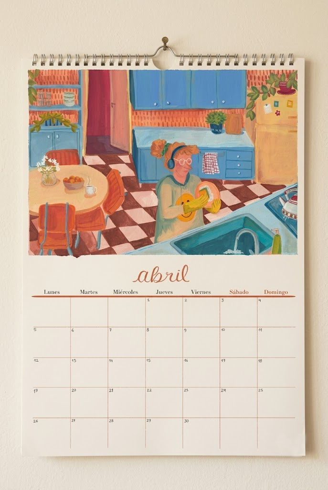

Detrás del Calendario
Soy una consumidora frecuente de este tipo de productos y con el tiempo fui definiendo mis necesidades al respecto. Como sé que tiene un peso visual importante en el espacio, me encargué de que cada mes se acompañe de una imagen que inspire y que dé optimismo.
Soy ilustradora profesional. Me importa llevar la belleza a las cosas cotidianas y creo fundamental rodearnos de herramientas que nos resulten bellas y nos inspiren además de ser útiles.
Conviviendo con mi pareja nos dimos cuenta de que el calendario de papel nos ayudaba a estar al tanto de las actividades comunes además de las propias. Como la estética es tan importante como la funcionalidad, las imágenes creadas y elegidas están muy cuidadas en cuanto a su clima, atmósfera y paleta de color. Me importa que esa imagen te traslade, aunque sea por unos segundos.
